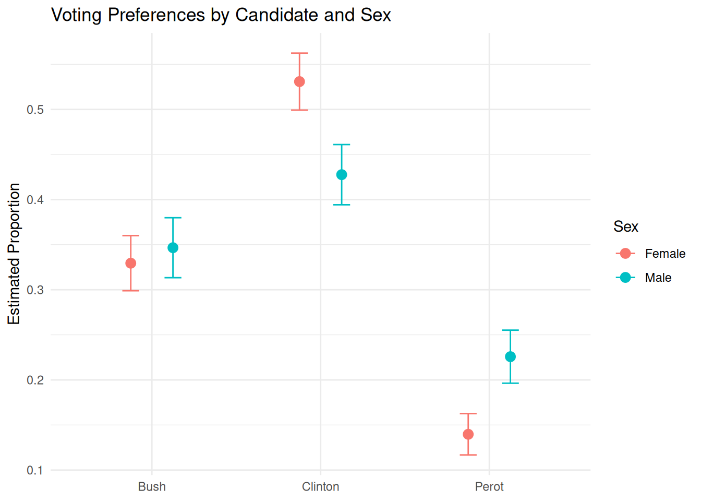

5 1992 Election
5.1 Introduction
Packages:
The primer.data package includes nes, a tibble with the data from the American National Election Studies.
5.1.1 Scenarios
What was the relationship between sex and voting in the 1992 US Presidential election among supporters of the three leading candidates: Clinton, Bush and Perot?
This is the first scenario. The 1992 U.S. Presidential election provides a rich opportunity to explore how demographic characteristics, like sex, influenced voter behavior. By examining the relationship between sex and support for the three major candidates—Bill Clinton, George H. W. Bush, and Ross Perot—we can ask whether men and women showed different patterns of candidate preference. Did one gender lean more Democratic or Republican? Was Perot’s independent appeal stronger among men than women? Understanding these differences helps us assess how social identity may shape political choice.
- Did a voter’s sex cause them to be more likely to vote for Clinton, Bush, or Perot in the 1992 U.S. Presidential election?
This question focuses on whether voting preferences differed systematically between men and women. Were male voters more drawn to one candidate than female voters, or vice versa? By looking at patterns in the data, we can begin to understand how gender may have shaped political preferences in this particular election.
5.2 Wisdom
Wisdom begins with a question and then moves on to the creation of a Preceptor Table and an examination of our data.
5.2.1 EDA
As (almost) always, we start by loading the tidyverse package and the primer.data package.
Our data comes from American National Election Studies. The primer.data package includes a version of the main data set with a selection of variables. The full ANES data is much richer than this relatively simple tibble.
nes# A tibble: 52,359 × 19
year state sex income age education race ideology ideology_numeric
<int> <chr> <chr> <fct> <int> <fct> <chr> <fct> <dbl>
1 1952 NY Female 68 - 95 25 Highschool White Weak Re… 6
2 1952 NY Female 68 - 95 33 Elementary White Indepen… 5
3 1952 NY Female 34 - 67 26 Highschool White Indepen… 4
4 1952 NY Male 34 - 67 63 Some Highsc… White Strong … 7
5 1952 OH Female 0 - 16 66 Highschool + White Strong … 7
6 1952 OH Female 68 - 95 48 Some Highsc… White Indepen… 3
7 1952 ID Female 0 - 16 70 Elementary White Indepen… 4
8 1952 MI Male 17 - 33 25 Highschool + Black Weak De… 2
9 1952 GA Female 0 - 16 30 Some Highsc… White <NA> NA
10 1952 OH Female 68 - 95 35 Elementary White Weak Re… 6
# ℹ 52,349 more rows
# ℹ 10 more variables: voted <chr>, region <fct>, pres_appr <chr>,
# influence <chr>, equality <chr>, religion <chr>, better_alone <chr>,
# therm_black <int>, therm_white <int>, pres_vote <chr>See the ?nes for details. We only need a small subset of this data:
nes_92# A tibble: 1,612 × 4
sex pres_vote race education
<chr> <fct> <chr> <fct>
1 Female Bush White Highschool
2 Female Bush White Some College
3 Female Clinton Black Some Highschool
4 Male Bush White College
5 Female Clinton White Highschool
6 Female Clinton White Some College
7 Female Perot White Some College
8 Male Bush White Some College
9 Female Bush White Adv. Degree
10 Male Perot White Highschool
# ℹ 1,602 more rowsIt is worth thinking about the quality of this data. How did NES, how do we, know for whom a surveyed individual voted? The answer is that we don’t. NES does not check the voting records and, even if it did, it could not determine a person’s vote.
As always, visualization is a useful tool. Plot your data! The outcome variable usually goes on the y-axis.
5.2.2 Preceptor Table
A Preceptor Table is the smallest possible table of data with rows and columns such that, if there is no missing data, we can easily calculate the quantity of interest.
5.2.2.1 Scenario 1
Units: The rows of the Preceptor Table refer to individual US voters. The question suggests that we are not interested in people who did not vote, although one might explore if men were more or less likely to vote in the first place.
Outcome: We want Presidential voting behavior in 1992. Such explorations are often restricted to just the two “major party” candidates, the nominees of the Democratic and the Republican parties, Bill Clinton and George HW Bush. But, in 1992, Ross Perot was a very successful “third party” candidate, winning almost 19% of the vote. Should he be included in the analysis? What about the 4th place finisher, Libertarian Andre Marrou? Again, the question does not specify. However, the outcome variable is certainly the candidate for whom an individual voted.
Causal or predictive model: Predictive.
Treatment: There are no treatments since this model is predictive.
Covariates: The only covariate we will consider is sex, with two values: “male” and “female”. Whatever your feelings about the contemporary limits of the sex binary, this is the only data collected in 1992s. In a full analysis, we would make use of more covariates, but the primary purpose of this chapter is to explore a categorical model with three possible outcomes.
Moment in Time: The Preceptor Table refers to the election season in the fall of 1992. We make no claims about other US presidential elections, not least because few feature a third party candidate as popular as Perot. Our purpose here is historical. We want to better understand what happened in this election, not make claims about other time periods. The moment in time is, however, longer than just Election Day itself since mail-in votes were cast in the weeks proceeding the election.
| Preceptor Table | ||
| ID |
Outcome
|
Covariate
|
|---|---|---|
| Vote | Sex | |
| 1 | Democrat | M |
| 2 | Third Party | F |
| … | … | … |
| 10 | Republican | F |
| 11 | Democrat | F |
| … | … | … |
| 103,754,865 | Republican | M |
5.2.2.2 Scenario 2
Units: Individual US voters.
Outcome: The presidential voting result of each individual voter.
Causal or predictive model: Causal.
Treatment: sex. Since we are studying how sex influences different voting behaviors, we must manipulate sex to see the outcomes.
Covariates:
Moment in Time: The election season in the fall of 1992
5.3 Justice
Justice concerns the Population Table and the four key assumptions which underlie it: validity, stability, representativeness, and unconfoundedness.
5.3.1 Validity
Validity is the consistency, or lack thereof, in the columns of the data set and the corresponding columns in the Preceptor Table. In order to consider the two data sets to be drawn from the same population, the columns from one must have a valid correspondence with the columns in the other. Validity, if true (or at least reasonable), allows us to construct the Population Table, which is the central result of Justice.
Our Preceptor Table includes the 103,754,865 people who voted for one of the three leading candidates in the 1992 presidential election. Our data includes a (tiny) subset of those people. This is a standard aspect of a “historical” data science project, when the data we want (the Preceptor Table) and the data we have come from the same moment in time. This makes the assumptions of validity and stability much easier to maintain. Of course, there can always be problems. A response to the nice ANES surveyer about one’s vote (or sex) is not the same thing as one’s actual vote (or sex). Indeed, a standard artifact of political surveys is that more people claim to have voted for the winning candidate than actually did. In this case, however, we will assume that validity holds and that we can “stack” the columns from the Preceptor Table and the data on top of each other. In fact, validity allows us to assume that the rows in the data is actually a subset of the rows in the Preceptor Table. To summarize:
Using data from the National Election Studies survey of US citizens, we seek to understand the relationship between voter preference and sex in the 1992 Presidential election.
5.3.2 Population Table
The Population Table includes a row for each unit/time combination in the underlying population from which both the Preceptor Table and the data are drawn.
5.3.2.1 Scenario 1
Because this project is historical, the Population Table has the same number of rows as the Preceptor Table.
| Population Table | |||
| Source | ID |
Outcome
|
Covariate
|
|---|---|---|---|
| Vote | Sex | ||
| PT/Data | 1 | Democrat | M |
| PT/Data | 2 | Third Party | F |
| PT | 3 | Republican | M |
| PT | 4 | Democrat | F |
| PT | 5 | Democrat | F |
| PT | 6 | Democrat | M |
| … | … | … | … |
| PT/Data | 10 | Republican | F |
| PT/Data | 11 | Democrat | F |
| PT | 12 | Democrat | … |
| PT | 13 | Republican | F |
| … | … | … | … |
| PT/Data | 103,754,865 | Republican | M |
We are not interested in these voters outside of the 1992 election. So, this Population Table, unlike most, does not require a Time column. The Preceptor Table and the data come from the same moment in time. Of course, this is not literally true. Recall: The Time column is always a lie. Some voters cast their ballots weeks before Election Day. Some NES participants were surveyed right after the election. Some were survey later. We sweep all these complications under the mythical moment in time which we assert is the same for both the data and the Preceptor Table.
5.3.2.2 Scenario 2
5.3.3 Stability
Stability means that the relationship between the columns in the Population Table is the same for three categories of rows: the data, the Preceptor Table, and the larger population from which both are drawn.
If the assumption of stability holds, then the relationship between the columns in the Population Table is the same for three categories of rows: the data, the Preceptor Table, and the larger population from which both are drawn. In this case, there is no larger population. Or, rather, the Preceptor Table is the larger population. And, since the data and the Preceptor Table come from the same moment in time, stability holds by definition.
5.3.4 Representativeness
Representativeness, or the lack thereof, concerns two relationships among the rows in the Population Table. The first is between the data and the other rows. The second is between the other rows and the Preceptor Table. Ideally, we would like both the Preceptor Table and our data to be random samples from the population. Sadly, this is almost never the case.
The NES is a highly professional organization so their survey does a good of capturing a random sample of all voters. But no real world survey is perfect! There are always problems. In particular, there are (somewhat) unobserved differences between the sort of people who respond to surveys and the sort of people who don’t. NES is more likely to capture the votes of cooperative people than the votes of misanthropes. If, among misanthropes, the relationship between sex and Presidential candidate is different than the relationship among cooperative voters, we might have problems. The technical term for the problem of people who don’t respond to surveys is “non-response.”
5.3.5 Unconfoundedness
Unconfoundedness means that the treatment assignment is independent of the potential outcomes, when we condition on pre-treatment covariates. This assumption is only relevant for causal models. We describe a model as “confounded” if this is not true. The easiest way to ensure unconfoundedness is to assign treatment randomly.
Since Scenario 1 is a predictive model, unconfoundedness can only apply to scenario 2.
5.3.6 Mathematics
The link function, which defines the mathematical form of a regression model, is largely determined by the type of outcome variable. For a binary outcome, we typically use a binomial logistic model. But when our outcome variable has three or more unordered categories, we turn to the multinomial logistic regression model — sometimes also called the categorical model.
We start with a simple three-outcome version of the model:
\[ \begin{aligned} \rho_{A} &= \frac{e^{\beta_{0, A} + \beta_{1, A} \cdot X}}{1 + e^{\beta_{0, A} + \beta_{1, A} \cdot X} + e^{\beta_{0, B} + \beta_{1, B} \cdot X}} \\\\ \rho_{B} &= \frac{e^{\beta_{0, B} + \beta_{1, B} \cdot X}}{1 + e^{\beta_{0, A} + \beta_{1, A} \cdot X} + e^{\beta_{0, B} + \beta_{1, B} \cdot X}} \\\\ \rho_{C} &= 1 - \rho_{A} - \rho_{B} \end{aligned} \]
Each category (A, B, or C) gets its own linear predictor (a combination of coefficients and covariates), and the probabilities are constructed so that they all fall between 0 and 1 and sum to 1.
This structure generalizes naturally to more than three outcomes and more than one covariate. The general form of the multinomial logistic regression model is:
\[ P(Y = k) = \frac{e^{\beta_{k0} + \beta_{k1} X_1 + \beta_{k2} X_2 + \cdots + \beta_{kn} X_n}}{\sum_{j=1}^{K} e^{\beta_{j0} + \beta_{j1} X_1 + \beta_{j2} X_2 + \cdots + \beta_{jn} X_n}} \]
with
\[ Y \sim \text{Multinomial}(\boldsymbol{\rho}) \quad \text{where} \quad \boldsymbol{\rho} = (\rho_1, \rho_2, \ldots, \rho_K) \]
and each \(\rho_k\) corresponds to the predicted probability for category \(k\).
Each outcome class \(k\) has its own set of regression parameters \(\beta_{k0}, \beta_{k1}, \ldots, \beta_{kn}\), allowing the model to capture distinct patterns of association between the covariates and each outcome.
5.4 Courage
Courage creates the data generating mechanism.
5.4.1 Models
Because our outcome variable has more than two unordered categories, we use a multinomial logistic regression model, using multinom_reg(engine = "nnet").
Multinomial logistic regression estimates the probability of each outcome category relative to a reference. In our case, the outcome pres_vote has three categories: Clinton, Bush, and Perot. The model uses one of these as a baseline (e.g., Bush), and then estimates how predictors such as sex influence the odds of choosing one of the other candidates relative to that baseline.
We fit the model using the tidymodels framework, using only sex as a predictor:
fit_sex <- multinom_reg(engine = "nnet") |>
fit(pres_vote ~ sex, data = nes_92)Categorical predictors like sex are automatically converted into 0/1 dummy variables. If sex includes levels “Male” and “Female”, then the model creates a dummy variable like sexMale, with “Male” as the reference category. The model estimates one set of coefficients for each non-reference outcome, so we get two equations: one comparing Clinton vs. Bush and one comparing Perot vs. Bush.
After fitting the model, we summarize it with
tidy(fit_sex, conf.int = TRUE)# A tibble: 4 × 8
y.level term estimate std.error statistic p.value conf.low conf.high
<chr> <chr> <dbl> <dbl> <dbl> <dbl> <dbl> <dbl>
1 Clinton (Intercept) 0.477 0.0757 6.30 2.90e-10 0.329 0.625
2 Clinton sexMale -0.267 0.113 -2.37 1.77e- 2 -0.488 -0.0465
3 Perot (Intercept) -0.858 0.109 -7.88 3.39e-15 -1.07 -0.644
4 Perot sexMale 0.429 0.147 2.92 3.48e- 3 0.141 0.717 This returns estimates and 95% confidence intervals for the model’s parameters. These coefficients are on the log-odds scale and tell us how being male (vs. female) affects the odds of voting for Clinton or Perot, relative to Bush.
| Outcome | Term | Estimate | 2.5% | 97.5% |
|---|---|---|---|---|
| Clinton | (Intercept) | 0.45 | 0.21 | 0.69 |
| Clinton | sexMale | -0.25 | -0.49 | -0.01 |
| Perot | (Intercept) | -0.85 | -1.10 | -0.60 |
| Perot | sexMale | 0.42 | 0.17 | 0.67 |
Each coefficient represents a log-odds difference. For example: - The intercept of 0.45 for Clinton indicates that, among female voters (since sexMale = 0), the log-odds of voting for Clinton rather than Bush is 0.45. - The sexMale coefficient of -0.25 for Clinton indicates that males have lower log-odds of voting for Clinton relative to Bush compared to females, by 0.25 log-odds units. - For Perot, the intercept of -0.85 suggests that females had a lower baseline likelihood of voting for Perot than Bush. - The sexMale coefficient of 0.42 for Perot implies that males were more likely than females to vote for Perot rather than Bush.
We then study race individually:
fit_race <- multinom_reg(engine = "nnet") |>
fit(pres_vote ~ race, data = nes_92)In this model, we include only race as a predictor of vote choice. Race is a categorical variable (e.g., White, Black, Other), so the model creates dummy variables for each level, using one group—such as Black—as the reference category. The model estimates how racial identity influences the likelihood of voting for Clinton or Perot relative to Bush.
Because sex is not included in this model, the estimates reflect average differences in vote choice across racial groups, without accounting for potential gender effects. For instance, the model might show that White voters were significantly less likely than Black voters to support Clinton over Bush, or more likely to vote for Perot rather than Bush. This provides insight into how voting behavior in 1992 varied by race, on average, across the electorate.
We can then summarize it with tidy, this time on fit_race.
tidy(fit_race, conf.int = TRUE)# A tibble: 10 × 8
y.level term estimate std.error statistic p.value conf.low conf.high
<chr> <chr> <dbl> <dbl> <dbl> <dbl> <dbl> <dbl>
1 Clinton (Intercept) -0.693 0.548 -1.27 2.06e-1 -1.77 0.380
2 Clinton raceBlack 3.61 0.646 5.59 2.32e-8 2.34 4.87
3 Clinton raceHispanic 1.29 0.588 2.20 2.77e-2 0.142 2.45
4 Clinton raceNative A… 1.20 0.913 1.32 1.87e-1 -0.585 2.99
5 Clinton raceWhite 0.794 0.551 1.44 1.50e-1 -0.286 1.87
6 Perot (Intercept) -1.61 0.775 -2.08 3.77e-2 -3.13 -0.0914
7 Perot raceBlack 0.799 0.980 0.815 4.15e-1 -1.12 2.72
8 Perot raceHispanic 0.386 0.854 0.452 6.51e-1 -1.29 2.06
9 Perot raceNative A… 1.20 1.20 1.01 3.15e-1 -1.14 3.55
10 Perot raceWhite 1.03 0.778 1.32 1.88e-1 -0.500 2.55 This command returns the estimated coefficients and 95% confidence intervals for each term in the multinomial logistic regression model that includes race as a predictor. The output shows how belonging to a particular racial group, compared to the reference group (e.g., Black voters), affects the log-odds of voting for Clinton or Perot relative to Bush.
Each row in the output corresponds to one term in one of the two comparisons: Clinton vs. Bush and Perot vs. Bush. The intercept represents the baseline log-odds of voting for each candidate among the reference group (e.g., Black voters), while the race terms indicate how those log-odds shift for White and Other racial groups. For example, a negative coefficient for raceWhite in the Clinton row would suggest that White voters had lower odds of voting for Clinton (vs. Bush) than Black voters.
We finally add sex to race as a final predictor:
fit_sex_race <- multinom_reg(engine = "nnet") |>
fit(pres_vote ~ sex + race, data = nes_92)In this model, we include both sex and race as predictors of vote choice. Race is a categorical variable (e.g., White, Black, Other), so the model creates dummy variables for each level, with one group as the reference (e.g., Black). The model now tells us how sex affects vote choice within each racial group, along with how race affects vote choice, controlling for sex.
By including both variables, we can see whether racial identity influenced voting patterns independently of gender. For example, this model might show that White voters were more likely to vote for Perot relative to Bush than Black voters, even after accounting for sex.
We can now summarize it again with tidy, this time on fit_sex_race.
tidy(fit_sex_race, conf.int = TRUE)# A tibble: 12 × 8
y.level term estimate std.error statistic p.value conf.low conf.high
<chr> <chr> <dbl> <dbl> <dbl> <dbl> <dbl> <dbl>
1 Clinton (Intercept) -0.528 0.555 -0.951 3.41e-1 -1.62 0.560
2 Clinton sexMale -0.220 0.118 -1.86 6.23e-2 -0.451 0.0113
3 Clinton raceBlack 3.53 0.647 5.46 4.75e-8 2.27 4.80
4 Clinton raceHispanic 1.21 0.590 2.06 3.94e-2 0.0589 2.37
5 Clinton raceNative A… 1.08 0.916 1.18 2.39e-1 -0.716 2.87
6 Clinton raceWhite 0.729 0.553 1.32 1.87e-1 -0.354 1.81
7 Perot (Intercept) -1.96 0.785 -2.50 1.24e-2 -3.50 -0.424
8 Perot sexMale 0.439 0.148 2.97 2.96e-3 0.149 0.728
9 Perot raceBlack 0.933 0.982 0.950 3.42e-1 -0.993 2.86
10 Perot raceHispanic 0.532 0.857 0.621 5.34e-1 -1.15 2.21
11 Perot raceNative A… 1.45 1.20 1.21 2.27e-1 -0.905 3.81
12 Perot raceWhite 1.14 0.780 1.47 1.43e-1 -0.386 2.67 This returns estimates and 95% confidence intervals for the model’s parameters. These coefficients are on the log-odds scale and tell us how being male (vs. female) and being white (vs. Black) affect the odds of voting for Clinton or Perot, relative to Bush.
| Outcome | Term | Estimate | 2.5% | 97.5% |
|---|---|---|---|---|
| Clinton | (Intercept) | 0.60 | 0.35 | 0.86 |
| Clinton | sexMale | -0.22 | -0.46 | 0.02 |
| Clinton | raceWhite | -0.50 | -0.77 | -0.24 |
| Perot | (Intercept) | -0.70 | -0.94 | -0.46 |
| Perot | sexMale | 0.39 | 0.15 | 0.63 |
| Perot | raceWhite | 0.28 | 0.02 | 0.53 |
Each coefficient represents a log-odds difference, holding the other predictor constant. For Clinton, the intercept of 0.60 tells us that among Black female voters (the reference levels for both variables), the log-odds of voting for Clinton rather than Bush is 0.60. The sexMale coefficient of -0.22 means that male voters have slightly lower log-odds of voting for Clinton over Bush compared to females, controlling for race. The raceWhite coefficient of -0.50 indicates that white voters were less likely than Black voters to vote for Clinton over Bush, adjusting for sex. For Perot, the sexMale coefficient of 0.39 shows that men were more likely than women to vote for Perot rather than Bush. The raceWhite coefficient of 0.28 suggests that white voters were also more likely than Black voters to vote for Perot rather than Bush.
5.4.2 Posterior Predictive Checks
Because our model is not Bayesian, we do not have full posterior distributions. But we can still ask: how well does our model reproduce the patterns in the data?
To answer this, we compare our model’s predicted probabilities to the actual proportions in the data. If the predicted values are close to the observed ones, that’s a good sign. If not, the model may be missing something important.
For instance, we might calculate the average predicted probability of voting for Clinton, Bush, or Perot within each sex group. We then compare those predicted probabilities to the actual proportions of each vote choice among males and females. These checks help confirm whether our fitted model provides a reasonable approximation of reality.
This approach is more qualitative than quantitative, but it’s a crucial step in understanding what our model is doing—and whether we believe it.
5.4.3 Testing
To interpret the coefficients from the model, we begin with the intercepts: these represent the log-odds of voting for Clinton or Perot (relative to Bush) for the reference group (females). The coefficients for sexMale tell us how those log-odds change for males. A negative coefficient means males are less likely than females to vote for that candidate (compared to Bush), while a positive coefficient means they are more likely.
Importantly, each coefficient corresponds to a separate binary comparison. For example, the model estimates how sex influences the odds of voting for Clinton vs. Bush and separately how it influences the odds of voting for Perot vs. Bush. There is no single parameter that describes how sex affects the odds of voting for Bush directly — rather, Bush acts as the comparison point.
After fitting and tidying the model, we examine the magnitude, direction, and statistical uncertainty (via confidence intervals) of each coefficient. This helps us assess whether sex had a statistically and practically significant effect on vote choice in 1992.
To interpret these coefficients, remember that each one corresponds to a specific comparison relative to the reference category (Bush).
-
Clinton vs. Bush: The negative coefficient for
sexMale(–0.25) means that males were less likely than females to vote for Clinton over Bush. -
Perot vs. Bush: The positive coefficient for
sexMale(+0.42) means that males were more likely than females to vote for Perot over Bush.
The size of these coefficients helps us understand the magnitude of the difference: - A coefficient of –0.25 for Clinton translates into an odds ratio of approximately exp(–0.25) ≈ 0.78, meaning males had 22% lower odds than females of voting for Clinton (vs. Bush). - A coefficient of +0.42 for Perot gives an odds ratio of exp(0.42) ≈ 1.52, meaning males had 52% higher odds than females of voting for Perot (vs. Bush).
These results support the idea that sex had a measurable and statistically significant impact on vote choice in the 1992 election. But this model is still simple—real voting behavior is likely influenced by many other variables. This model serves as a clear and interpretable first step.
5.4.4 Data Generating Mechanism
Putting the mathematics together with the parameter estimates gives us the data generating mechanism
\[ vote_i \sim Categorical(\rho_{bush}, \rho_{clinton}, \rho_{perot}) \]
\[
\begin{aligned}
\rho_{bush} &=& 1 - \rho_{clinton} - \rho_{perot}\\
\rho_{clinton} &=& \frac{e^{0.45 - 0.25 male}}{1 + e^{0.45 - 0.25 male}}\\
\rho_{perot} &=& \frac{e^{-0.86 + 0.42 male}}{1 + e^{-0.86 + 0.42 male}}\\
\end{aligned}
\] This is the last time we are going to go to the trouble of combining the mathematical formula of the DGM with the specific estimated values. First, these formulas are misleading! The value of \(\beta_{0, clinton}\), for example, is not exactly 0.45. In fact, we don’t know what the value is! Being Bayesians, we calculated a posterior probability distribution for \(\beta_{0, clinton}\). We draw from that distribution when we calculate quantities of interest, as we did above with add_epred_draws(). Second, you probably did not even look that closely at these complex formulas. And we don’t blame you! Being a good race car driver means focussing on how to drive better, not on the physics of carburetors. Similar, being a good data scientist means focusing on the Cardinal Virtues as a method for using data to answer questions. Leave the math to the computer.
5.5 Temperance
Temperance uses the data generating mechanism to answer the question with which we began. Humility reminds us that this answer is always a lie. We can also use the DGM to calculate many similar quantities of interest, displaying the results graphically.
5.5.1 Questions and Answers
Recall the questions with which we began:
What was the relationship between sex and voting in the 1992 US Presidential election among supporters of the three leading candidates: Clinton, Bush and Perot?
Did a voter’s sex cause them to be more likely to vote for Clinton, Bush, or Perot in the 1992 U.S. Presidential election?
We answer these questions by using plot_predictions:
plot_predictions(fit_sex_race,
by = "sex",
type = "prob",
draw = FALSE) group sex estimate std.error statistic p.value s.value
1 Bush Female 0.3294549 0.01559268 21.12881 4.322640e-99 326.7590
2 Bush Male 0.3466157 0.01696772 20.42795 9.438735e-93 305.7007
3 Clinton Female 0.5308494 0.01613187 32.90687 1.752638e-237 786.4874
4 Clinton Male 0.4276229 0.01703860 25.09729 5.323373e-139 459.3357
5 Perot Female 0.1396957 0.01169067 11.94933 6.544824e-33 106.9133
6 Perot Male 0.2257615 0.01501235 15.03838 4.114672e-51 167.3776
conf.low conf.high df
1 0.2988938 0.3600160 Inf
2 0.3133595 0.3798718 Inf
3 0.4992315 0.5624673 Inf
4 0.3942278 0.4610179 Inf
5 0.1167824 0.1626090 Inf
6 0.1963378 0.2551851 InfThis code returns the estimated probabilities of voting for each candidate, for male and female.
The intercept coefficient from the fitted model (0.4553900) represents the log-odds, whereas the predicted probabilities from plot_predictions() represent the chances of a voter choosing Clinton based on sex, transformed from those log-odds.
Often, the best answers to broad questions are graphics. Consider:
plot_predictions(fit_sex_race,
by = "sex",
type = "prob",
draw = FALSE) |>
ggplot(aes(x = group, y = estimate, color = sex)) +
geom_point(size = 3, position = position_dodge(width = 0.5)) +
geom_errorbar(aes(ymin = conf.low,
ymax = conf.high),
width = 0.2,
position = position_dodge(width = 0.5)) +
labs(title = "Voting Preferences by Candidate and Sex",
x = NULL,
y = "Estimated Proportion",
color = "Sex") +
theme_minimal()
5.5.2 Humility
The world is always more uncertain than our models would have us believe.